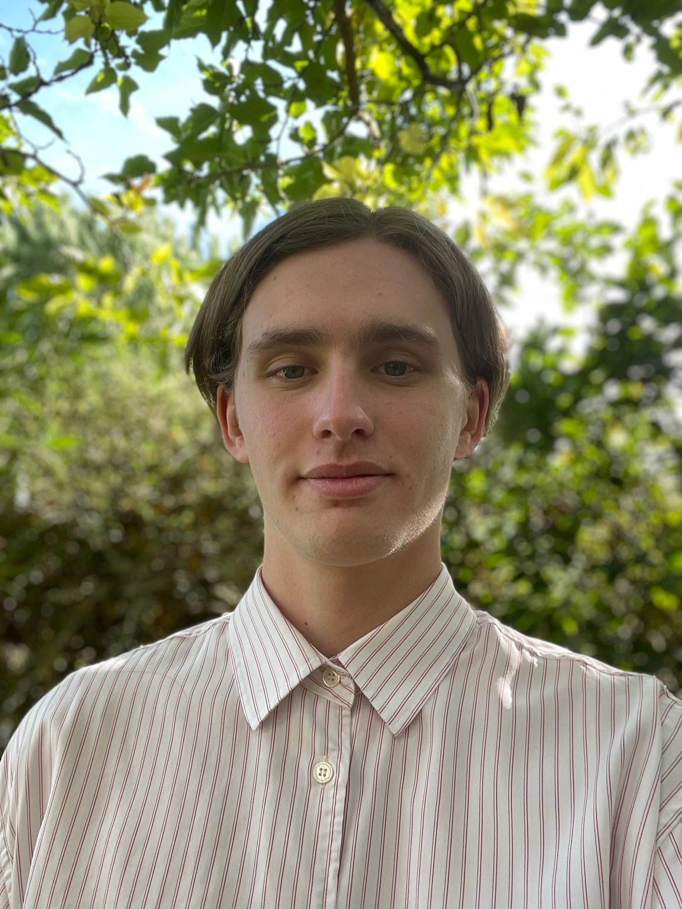

This year I began my second year in a Bachelor’s degree in management, marketing and communication and would love to work in the fashion industry. I am known for my curiosity, my autonomy, and my capacity to adapt to different situations. Feel free to contact me if you are interested in my profile
My experiences
“C2S” in Courlay:
A week of internship within a dressmaking factory and a fashion studio. For one week, I observed several posts linked to this business sector and bring aid to employees.“Maldron Hotel Parnell Square” in Dublin :
Internship in a foreign country (which last (for) 2 months. My tasks were various but I have mainly contributed to the booking management and the greeting of customers for the breakfast“Fidelia” in Nantes:
A 3 months summer job as assistance coordinator in the insurance field and more precisely in a remote assistance company. I was in charge to pick up the phone and answer customers’ needs by implementing vehicle’s towing(s) and repatriation(s) for people who have had a breakdown or a crash with their car.
Education
- Baccalaureat (French secondary school diploma) with distinction, specialising in mathematics and history, geography, political science and geopolitics.
- Second year in Bachelor’s degree in Management, Marketing and Communication in Audencia (will graduate in 2024)
My hobbies and my ambitions
I have a lively interest in fashion and would like to expand my knowledge of this sector. I constantly keep myself informed about brands collections and news in the fashion industry.